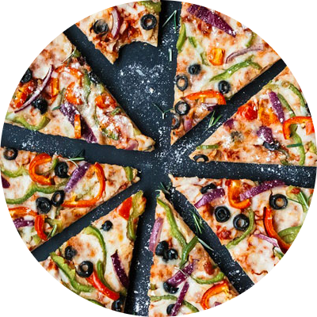
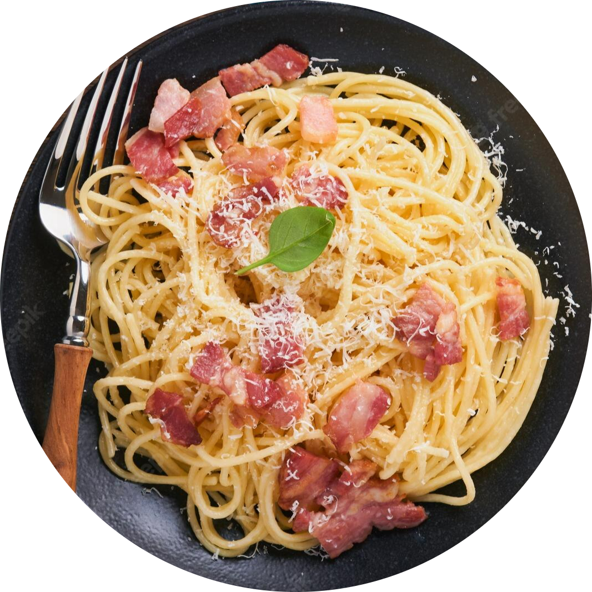
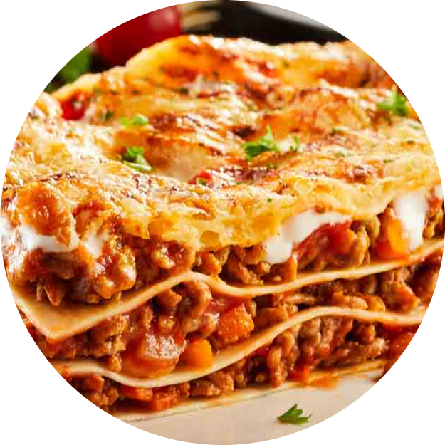
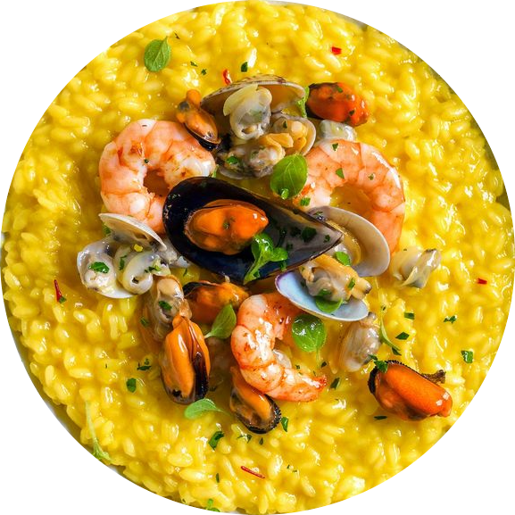

Italian cuisine (Italian: Cucina italiana, pronounced is a Mediterranean cuisine consisting of the ingredients, recipes and cooking techniques developed across the Italian Peninsula since antiquity, and later spread around the world together with waves of Italian diaspora. Significant changes occurred with the colonization of the Americas and the introduction of potatoes, tomatoes, capsicums, maize and sugar beet — the latter introduced in quantity in the 18th century. It is one of the best known and most appreciated gastronomies worldwide. |
|  |
ITALIAN PIZZAThe term pizza was first recorded in the 10th century in a Latin manuscript from the Southern Italian town of Gaeta in Lazio, on the border with Campania. Modern pizza was invented in Naples, and the dish and its variants have since become popular in many countries. It has become one of the most popular foods in the world and a common fast food item in Europe, North America and Australasia; available at pizzerias (restaurants specializing in pizza), restaurants offering Mediterranean cuisine, via pizza delivery, and as street food. Various food companies sell ready-baked pizzas, which may be frozen, in grocery stores, to be reheated in a home oven. |
|  |
PASTAPastas are divided into two broad categories: dried (pasta secca) and fresh (pasta fresca). Most dried pasta is produced commercially via an extrusion process, although it can be produced at home. Fresh pasta is traditionally produced by hand, sometimes with the aid of simple machines. Fresh pastas available in grocery stores are produced commercially by large-scale machines. |
|  |
LASAGNALasagne, also lasagna, is both a form of pasta in sheets (often rippled in North America, though seldom so in Italy) and also a dish, sometimes named Lasagne al forno (meaning "Lasagne in the oven") made with alternate layers of pasta, cheese, and ragù (a meat sauce). While it is traditionally believed to have originated in Italy, then evidence has come to light suggesting that a very similar meal known as "loseyns" (pronounced 'lasan') was eaten in the court of King Richard II in the 14th Century. The recipe was also featured in the first cookbook ever written in England. However, the claim is just far from universally accepted, the Italian Embassy in London particularly speaking out against it for Italy. an_text" |
|  |
RISOTTORisotto (plural: risotti) is a typical Italian dish based on rice. Originally it comes from Piedmont, where rice is commonly grown. It is very important for the cuisine of Milan. Common ingredients of the base recipe are white wine, and onions. Risotto is a class of Italian rice dishes cooked in broth to a creamy consistency. The broth may be meat-, fish-, or vegetable-based. Many types of risotto contain Parmesan cheese, butter, and onion. It is one of the most common ways of cooking rice in Italy. Risotto is normally a primo (first course), served on its own before the main course, but risotto alla milanese is often served together with ossobuco alla milanese. |